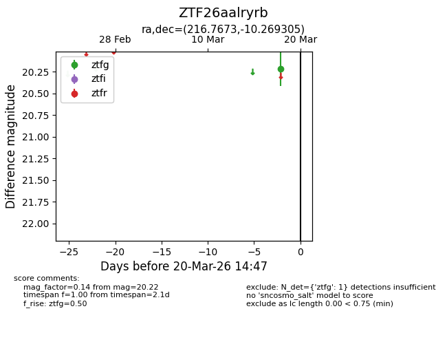
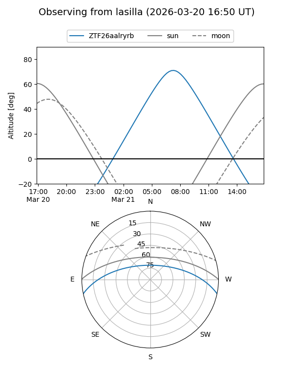
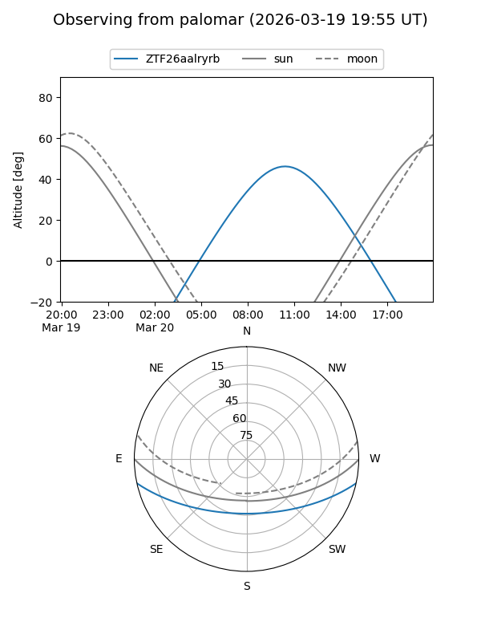

ZTF26aalryrb
Target ZTF26aalryrb at 2026-03-20 14:49
Aliases and brokers:
FINK: link
Lasair: link
ALeRCE: link
alt names
ZTF26aalryrb (ztf,fink_ztf)
Coordinates:
equatorial (ra, dec) = 216.7673,-10.26931
equatorial (HMS+DMS) = 14:27:04.14,-10:16:09.50
galactic (l, b) = (337.9633,+45.99687)
Flags:
Photometry:
last ztfg=20.22
1 ztfg detections
Lightcurve

Visibility


Additional plots